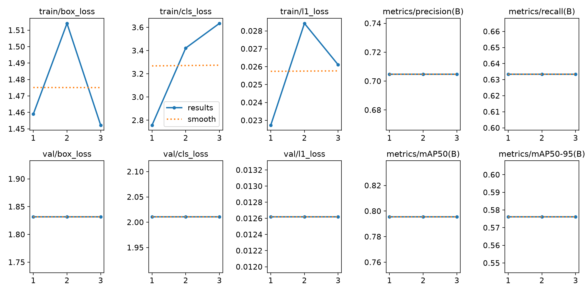
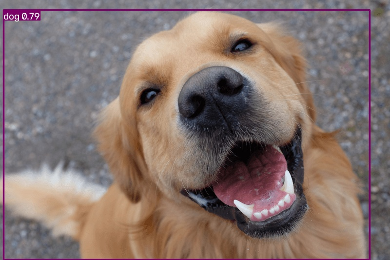
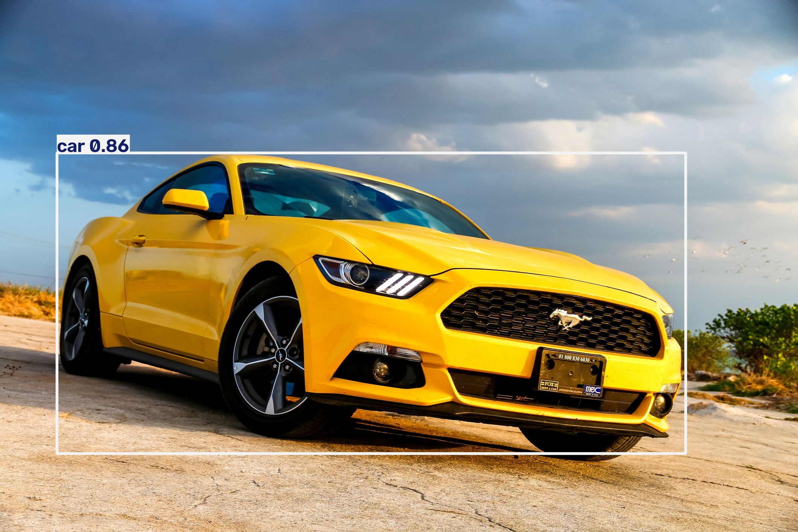
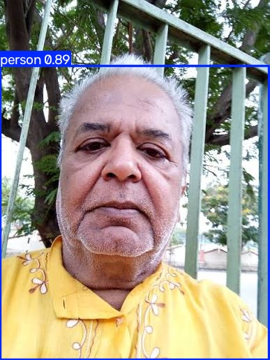
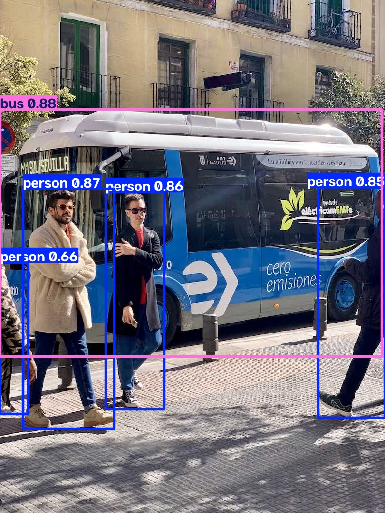
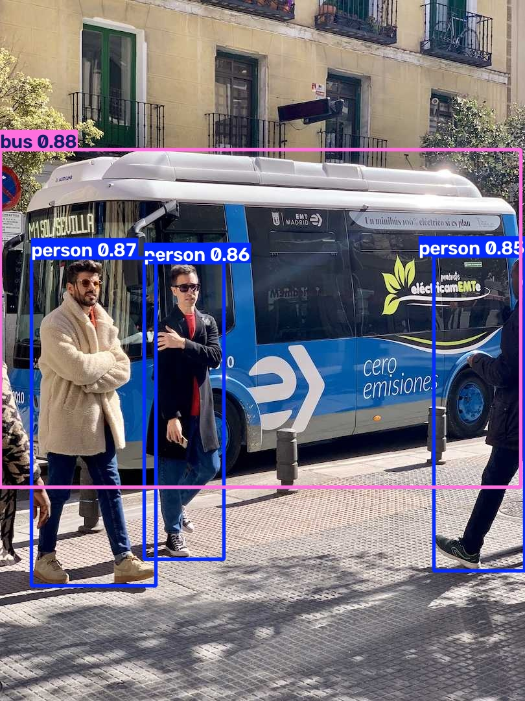

Nome: Kauan Reis Bueno Turma: 8 Período Data: 17/11/2026
O objetivo foi configurar Python e um ambiente virtual no Windows, instalar Ultralytics, executar detecção com o modelo pré-treinado YOLO26n, comparar dois limiares de confiança e realizar um treino experimental no COCO8. Os comandos estão em README.md.
Python é uma linguagem de programação de alto nível, com sintaxe acessível e um ecossistema amplo de bibliotecas para dados, aprendizado de máquina e visão computacional. Isso permite combinar preparação dos dados, treinamento e inferência com ferramentas como PyTorch e Ultralytics.
Um ambiente virtual mantém as dependências deste projeto separadas das de outros projetos. Sem esse isolamento, versões incompatíveis de uma biblioteca podem substituir umas às outras e quebrar programas diferentes; também fica mais difícil reproduzir a configuração usada.
CPU é um processador de uso geral, adequado para executar o YOLO em tarefas pequenas, mas tende a levar mais tempo. GPU executa muitas operações numéricas em paralelo e costuma acelerar treinamento e inferência de redes neurais, desde que haja hardware e suporte compatíveis.
Classificação atribui uma ou mais categorias à imagem como um todo. Detecção também prevê uma caixa delimitadora para cada objeto e associa a ela uma classe e um escore, indicando onde o ônibus aparece.
conf de 0,25 para 0,70?O limiar mais alto descarta previsões cujo escore é inferior a 0,70. Em geral, aparecem menos caixas; algumas previsões fracas incorretas podem desaparecer, mas objetos reais também podem deixar de ser detectados. Nesta execução, a foto de pessoa manteve uma detecção nos dois limiares; na imagem pública do ônibus, o total de pessoas detectadas caiu de quatro para três.
Não. O COCO8 tem apenas oito imagens e serve para conferir o funcionamento do pipeline, não para produzir um detector robusto. Poucos exemplos podem não representar a variedade do mundo real; o ajuste pode memorizar particularidades do conjunto e piorar a generalização. best.pt é o checkpoint escolhido pelo critério de validação do treino, o que não garante que ele supere os pesos iniciais em toda imagem.
yolo26n.pt)imgsz=320, batch=2, CPUbest.pt: modelo/best.pt.bus.jpg teve 4 pessoas e 1 ônibus; zidane.jpg, 2 pessoas e 1 gravata.bus.jpg, modelo pré-treinado: conf=0.25 detectou 4 pessoas e 1 ônibus; conf=0.70 detectou 3 pessoas e 1 ônibus. Uma detecção de pessoa ficou abaixo do limiar alto.bus.jpg, checkpoint após treino: 4 pessoas e 1 ônibus. A contagem coincide com o modelo pré-treinado em 0,25; isso não demonstra melhora. As imagens com as caixas previstas estão incluídas na seção Evidências.conf=0.25: cachorro.png → 1 cachorro (confiança 0,795); carro.jpeg → 1 carro (0,863); pessoa.jpg → 1 pessoa (0,889).pessoa.jpg): conf=0.25 e conf=0.70 retornaram 1 pessoa em ambos os casos. A predição manteve confiança de aproximadamente 0,889, acima dos dois limiares.pessoa.jpg: os dois modelos retornaram 1 pessoa. Essa contagem não demonstra melhora; COCO8 tem só quatro exemplos de treino e quatro de validação e não é um conjunto personalizado de pessoas.Parâmetros e métricas do treino: evidencias/treino_coco8_args.yaml e evidencias/treino_coco8_results.csv. Detecções das três fotos e arquivos com caixas/escores em runs/detect/resultados/proprias_025/ e proprias_com_scores/; comparações em pessoa_025/, pessoa_070/ e pessoa_pos_treino/. Pesos em modelo/best.pt. Os registros incluídos consistem em métricas, parâmetros e imagens geradas; não foram incluídas capturas de tela do terminal.






O ambiente, o treino COCO8 e as inferências nas imagens públicas e próprias foram executados. As saídas e métricas estão salvas. Este relatório apresenta as imagens detectadas e as métricas salvas. As capturas de tela do terminal solicitadas no enunciado não integram as evidências disponíveis.